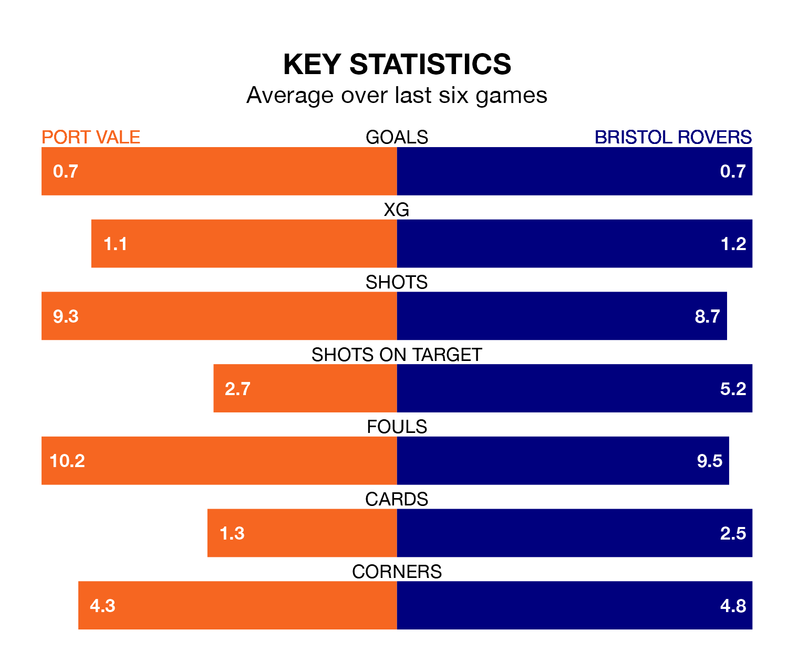

Struggling Port Vale face Bristol Rovers at Vale Park on Friday looking to build on a win in their last league outing.
After securing all three points with a 1-0 victory over Burton Albion on March 23, the Valiants sit 21st in EFL League One.
They travel to play a Rovers side 14th in the standings, who lost in their last match, 5-0 against Lincoln City, on March 16.
In the last 10 years, Vale and Rovers have played each other on eight occasions. Vale won two of them, Rovers five, and they drew once.
On average, the Valiants scored 0.9 goals and the Gas 1.8 in those matches.
Their last meeting was on October 3, when Rovers won 3-0 at home.
Vale are in disappointing form in EFL League One, with one win and two draws from their last six games.
With two wins and a draw over that period, Rovers' form is slightly better – they have taken seven points from 18, compared to the Valiants's five.
In Chris Martin, the Gas have one of the league's sharpest shooters so far this season. He has notched 15 goals in 28 appearances, to sit fifth in the scoring charts.
His goal rate of one every 137 minutes is much quicker than that of Ben Garrity, the hosts' top scorer with a goal every 280 minutes, and a total of nine goals in 31 games.
With 36 goals in 38 games so far this season, Vale are scoring at below the league average rate with 0.9 goals per game. And they are conceding more than average, letting in 61 goals at a rate of 1.6 per game.
The away team, meanwhile, are average scorers, with 1.3 goals per game. They have conceded 1.5 goals per game.
Updated: 12:39 (UTC), 26/03/24